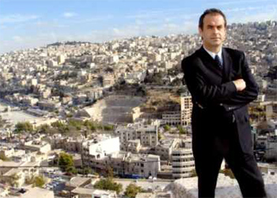
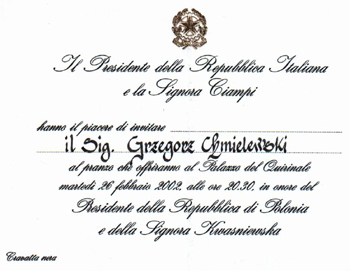

Wyk³adowca - Organizator - Grzegorz Chmielewski
 Wieloletni pracownik i by³y zastêpca dyrektora Protokó³u Dyplomatycznego Ministerstwa Spraw Zagranicznych.Wspó³organizator i uczestnik wielu wizyt najwy¿szego szczebla i ró¿nych uroczysto¶ci pañstwowych, takich jak m.in.: pielgrzymki papie¿y Jana Paw³a II i Benedykta XVI, obchody '55 i '60 rocznicy wyzwolenia obozu
w O¶wiêcimiu, uroczysto¶ci w Jedwabnym, 25 rocznicy utworzenia "Solidarno¶ci".
Uczestniczy³ w pracach zwi±zanych z otwarciem cmentarzy w Katyniu i Charkowie oraz Cmentarza Orl±t
we Lwowie.
Bra³ udzia³ w przygotowaniach i realizacji wizyt, spotkañ i przyjêæ g³ów koronowanych, prezydentów, premierów, Sekretarza Generalnego ONZ, Sekretarzy Generalnych NATO, ministrów spraw zagranicznych
i ró¿nych przedstawicieli instytucji unijnych.
 Wspó³organizowa³ wizyty studyjne korpusu dyplomatycznego w poszczególnych województwach, pikniki letnie, ró¿nego rodzaju pokazy dla dyplomatów i pracowników urzêdów centralnych.
Podczas polskiej prezydencji w Radzie Unii Europejskiej pracowa³ w referacie obs³ugi protokólarnej tego przedsiêwziêcia. Prowadzi³ zajêcia dla osób pracuj±cych przy polskiej prezydencji. Wspó³organizowa³ spotkania unijne w Krakowie i w Warszawie oraz podró¿e studyjne unijnych dyplomatów w województwach: Podkarpackim, Pomorskim, Ma³opolskim oraz Kujawsko-Pomorskim.
Prowadzi³ szkolenia i warsztaty z protokó³u dyplomatycznego, etykiety i zasad urzêdniczego savoir - vivre'u dla pracowników urzêdów centralnych, osób wyje¿d¿aj±cych na placówki dyplomatyczne, dla kadry
z urzêdów wojewódzkich i marsza³kowskich, studentów oraz uczniów szkó³ ponadgimnazjalnych.
{kind=link}
{kind=link}
{kind=link}
{kind=link}
{kind=link}
{kind=link}